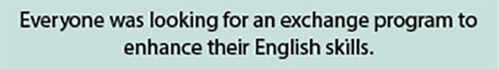
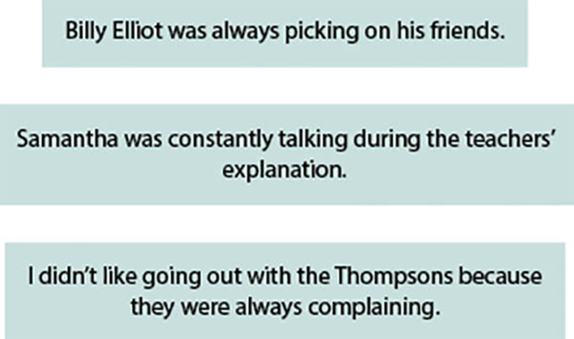
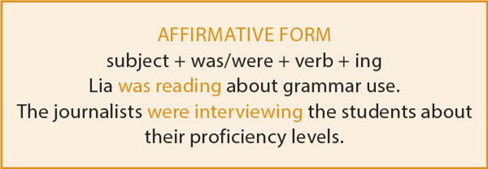
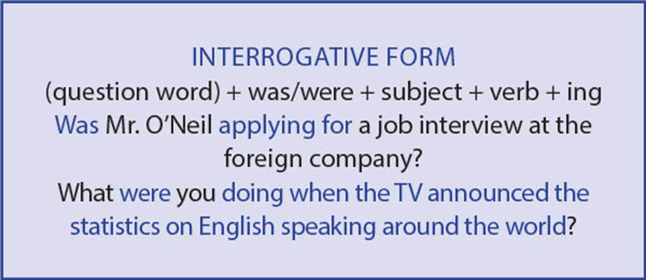
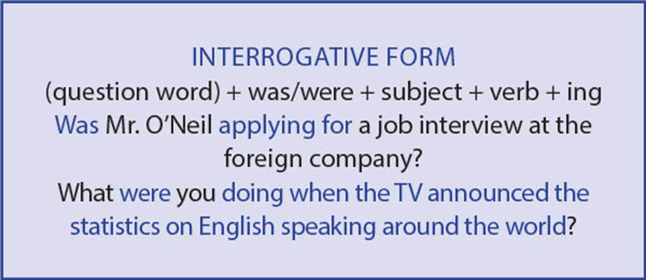

The Internet is today the most important communication platform in the world. And when it comes to the Internet, it means e-mail, messaging, websites, among many other forms of interaction between people.
Source: W3 Techs Web Technology Surveys. Historical trends in the usage of content languages for websites . Available at: <https://w3techs.com/technologies/history_overview/content_language>. Accessed on: July, 13rd, 2021.
What were you doing when you heard an English word for the first time? When and where did you speak your first sentence in this language? There is a slight chance you will remember such specific information, but you may remember your first English teacher, a nursery rhyme you learned as a kid, or even the lines of your most beloved movie or song in English. And so could possibly do the 378 million native speakers and the 743 million people around the globe who speak English as a second language. Considering there are approximately 7 billion people in the world, this is relevant data.
Currently, people who use English as their mother tongue make up less than 10% of the world’s population; nevertheless, in terms of the quantity of transmitted information, English is the leader by far. Throughout the world, it is studied as a foreign language and employed by a majority of Internet users, used in most movies both in original recording or subtitles, and found in music, broadcasting, technical and scientific periodicals.
It is known that a working knowledge of English is required in many fields and occupations, and that’s why teaching English at least at a basic level is mandatory in a variety of countries. Due to globalization, e-mail exchanges, meetings and negotiations are mostly performed in English. Therefore, speaking the language can be a breakthrough for career growth, or even for getting a job, either in national or international companies. If you were thinking about improving your skills but weren’t feeling inspired, we hope you change your mind and find a connection with this powerful international language.
- How much time do you invest in learning English? Do you think it is enough?
- In addition to studying at the regular school, paying attention to classes and doing the exercises, what else do you do to improve your English skills?
- What careers can you choose if you speak English?
 Neste capítulo serão abordadas as habilidades
EM13LGG301,
EM13LGG402,
EM13LGG403.
Neste capítulo serão abordadas as habilidades
EM13LGG301,
EM13LGG402,
EM13LGG403.
Past Continuous tense
On many suspense movies, when a crime has been committed and the detectives or officers need to investigate suspects in order to find out if they have alibis, they ask questions such as the following:
We use the Past Continuous tense (also called Past Progressive tense) to describe an action that was in progress in the past. When we use the Past Continuous tense, our listener usually knows or understands what time we are talking about. The answer for the previous question, for example, could be:
We often use the Past Continuous tense to “set the scene” in stories. We use it to describe the background situation that was happening when the action began. Often, the story starts with the Past Continuous tense and then moves into the Past Simple tense. Here is an example:

Verb “be” for the Past Continuous
The structure of the Past Continuous is always: was/were + verb + -ing.
It is always good to remind you that we use was with the pronouns I / he / she / it and were with the pronouns we / you / they.
We always use a singular verb after the indefinite pronouns:
Repetition and irritation with “always”
The Past Continuous with words such as “always” or “constantly” expresses the idea of something irritating or shocking that was happening in the past, and it shows a negative emotion. Remember: the words “always” or “constantly” go between “be” and “verb + -ing.”
Forms
 

Grammaring
Read the text to answers the questions that follow.
‘Globish’: why France has a love-hate relationship with global English
A Parisian book fair’s promotion of Globish may have sparked outrage among critics, but it’s not the first time the French have promoted simplified English.
French writers were up in arms this week after the Salon du Livre book fair in Paris announced a celebration of young adult books that would feature a “Bookroom”, a “Photobooth”, and even a “Bookquizz”, a prospect so exciting it needs two zs. Such anglicisms, critics wrote, were an “unconscionable act of cultural vandalism”, employing the “sub-English known as Globish”.
It is a lamentable irony, then, that Globish has been so energetically popularised by a Frenchman. In 2004, the former IBM executive Jean-Paul Nerrière began selling his system of simplified English (only 1,500 words) to students around the world. (Globish is a portmanteau of “globe” and “English”.) The earliest attested use of the term, however, described in 1997 a more natural linguistic hybridisation of various “non-western forms of English” that had become just as “creative and lively” as the standard tongue.
“‘Globish’: why France has a love-hate relationship with global English”. The Guardian, February 8th, 2019. Available at: <www.theguardian.com/books/2019/feb/08/word-of-the-week-globish>. Accessed on: July 13rd, 2021. © Copyright Guardian News & Media Ltd 2019.
“Globish” is therefore both a trademark for one man’s singular vision of international communication, and a way of describing the branching of English into multiple exotic planetary species. But the literary Parisians see it simply as yet more Anglo-Saxon cultural imperialism. Well, as the French do sometimes say, c’est la life.
1
Answer the questions about the text.
- Take a quick look at the headline and answer: Are the French always happy about Globish? Explain with an excerpt from the text.
- According to the author, how was the use of the term “Globish” described in 1997?
- Who popularized the term “Globish” in the early 2000’s?
- How do Parisians see Globish?
2
Choose the correct alternative for the sentences.
- My brother and sister _____ playing tennis at 11 a.m. yesterday.
- ____ you still working at 7 p.m. last night?
- Why ____ he having lunch at 4 p.m.?
- Was he not ____ his homework?
- Snow ____ lightly. Suddenly a reindeer appeared.
( ) are ( ) was ( ) were
( ) Were ( ) Are ( ) Was
( ) was ( ) does ( ) were
( ) fell ( ) was falling ( ) is falling
3
Fill in the spaces with the proper verbs in the correct tenses.
Yesterday, it ____ (rain) all day, that’s why Lucy ____ (stay) inside the house, she couldn’t go outside. She ____ (want) to call her friends, but the rain interrupted the telephone service.
She ____ (try) to keep busy in the house, and ____ (pick up) a book to read. When she ____ (read) the book, the electricity ____ (go) out. Then, she ____ (start) to meditate, because lights ____ (be) necessary to do so. After she ____ (finish) her meditation, she ____ (have) no more ideas. So, she ____ (sit) near the window and ____ (look) at the rain.
While she ____ (look) at the rain, the phone ____ (ring). It ____ (be) Mary, her best friend. Lucy and Mary ____ (talk) on the phone, ____ (look) at the rain and ____ (talk) about the film they both ____ (see) the night before. They ____ (have) fun!
After some time, they ____ (hang) up the phone. It ____ (be) still ____ (rain). But she ____ (do/not) mind, because it ____ (be) lunchtime, and her mom always ____ (come) home for lunch. Lucy ____ (set) the table when Mrs. Jones ____ (arrive) with food from the restaurant where she ____ (works). How delicious! They ____ (eat) when the rain finally ____ (stop). After lunch, she could leave the house and walk in
1
UEL-PR 2019 Texto para a questão 1.
My tongue is divided into two
By Quique Avilés
My tongue is divided into two
by virtue, coincidence or heaven
words jumping out of my mouth
stepping on each other
enjoying being a voice for the message
expecting conclusions
My tongue is divided into two
into heavy accent bits of confusion
into miracles and accidents
saying things that hurt the heart
drowning in a language that lives, jumps,
translates
My tongue is divided by nature
by our crazy desire to triumph and conquer
This tongue is cut up into equal pieces
one wants to curse and sing out loud
the other one simply wants to ask for water
My tongue is divided into two
one side likes to party
the other one takes refuge in praying
tongue
english of the funny sounds
tongue
funny sounds in english
tongue
sounds funny in english
tongue
in funny english sounds
My tongue sometimes acts like two
and it goes crazy
not knowing which side should be speaking
which side translating
My tongue is divided into two
a border patrol runs through the middle
frisking words
asking for proper identification
checking for pronunciation
My tongue is divided into two
My tongue is divided into two
I like my tongue
it says what feels right
I like my tongue
it says what feels right
Quique Avilés, “My tongue is divided into two” from The Immigrant Museum. Copyright © 2004 by Quique Avilés. Reprinted by permission of Raices de Papel. Source: The Immigrant Museum (Rain Coast Books, 2004).
“My tongue is divided into two” foi escrito por Quique Avilés, nascido em El Salvador e radicado nos Estados Unidos desde 1980, quando tinha 15 anos de idade.
Como essa identidade do autor é retratada no poema? Justifique sua resposta com trechos do texto.
2
Uece 2014 The students ____ studying now, but two hours ago they ____ playing football.
- were, are
- were, will be
- are, were
- are, have been
3
Enem 2014 Texto para a questão 3.
If You Can’t Master English, Try Globish
PARIS – It happens all the time: during an airport delay the man to the left, a Korean perhaps, starts talking to the man opposite, who might be Colombian, and soon they are chatting away in what seems to be English. But the native English speaker sitting between them cannot understand a word.
They don’t know it, but the Korean and the Colombian are speaking Globish, the latest addition to the 6,800 languages that are said to be spoken across the world. Not that its inventor, Jean-Paul Nerrière, considers it a proper language.
“It is not a language, it is a tool,” he says. “A language is the vehicle of a culture. Globish doesn’t want to be that at all. It is a means of communication.”
Nerrière doesn’t see Globish in the same light as utopian efforts such as Kosmos, Volapuk, Novial or staunch Esperanto. Nor should it be confused with barbaric Algol (for Algorithmic language). It is a sort of English lite: a means of simplifying the language and giving it rules so it can be understood by all.
BLUME, M. Disponível em: www.nytimes.com. Acesso em: 28 out. 2013 (fragmento).
Considerando as ideias apresentadas no texto, o Globish ( Global English ) é uma variedade da língua inglesa que
- tem status de língua por refletir uma cultura global.
- facilita o entendimento entre o falante nativo e o não nativo.
- tem as mesmas características de projetos utópicos como o esperanto.
- altera a estrutura do idioma para possibilitar a comunicação internacional.
- apresenta padrões de fala idênticos aos da variedade usada pelos falantes nativos.